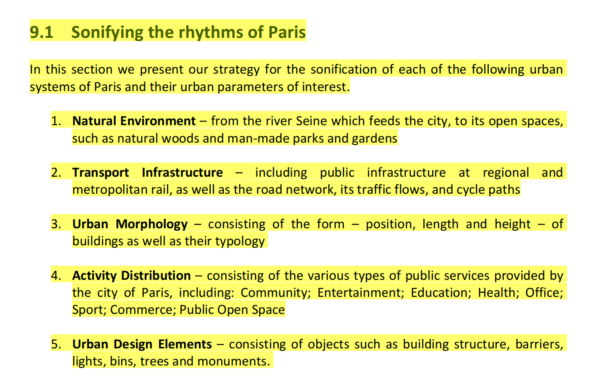
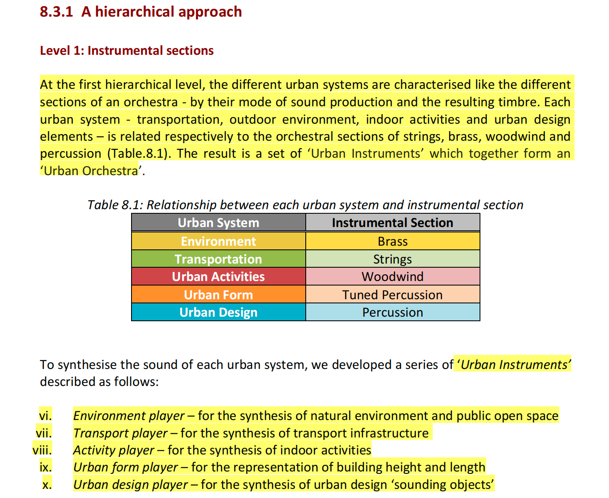
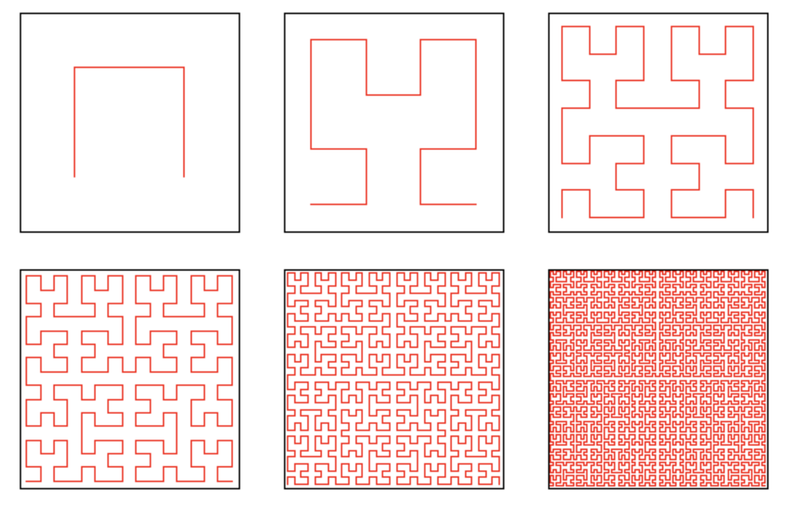

API 先建立上下文，系统明确这次请求究竟需要什么。
B / PRIMARY IDENTITY
设计有边界的
设计有边界的
自主性
这是一个 PM 的作品集，想通过下述几个项目来传达我对 AI 的理解。
从 AI 的行动边界 -> AI 的主动性 -> Human in the loop -> 回到模型本身思考它的局限性
注：右侧的城市可听化项目仅作引子使用
我是一个能全栈的 AIPM，做产品，也把它写出来。
我的工作始终围绕一个问题：如何为 AI 设定边界，让它发挥真正的自主能力——看见、判断、提议和行动，并在需要时停下来，把控制权还给人。
这就是 Human in the loop：不只是 human 在 loop，AI 也需要知道什么时候该 loop。
ENTER
WORKS ↓ SHENZHEN
25点学习
AI PM/ AI NATIVE / FULL-STACK / TOC / CITY STUDY
WORKS ↓ SHENZHEN
25点学习
AI PM/ AI NATIVE / FULL-STACK / TOC / CITY STUDY
II声音建模
这个问题并不是从零开始。Adhitya 先把城市拆成不同系统，再将系统对应到管弦乐声部。先回答“城市由什么组成”，再回答“这些系统如何被听见”。重点不是给城市添加一段背景音乐，而是让不同城市系统拥有可以被区分的听觉角色。

01 / URBAN SYSTEMS先把城市拆成不同系统
02 / LEVEL 1让不同系统拥有不同声部参考：Adhitya S.《Sonifying Urban Rhythms》2013，p.103 / p.97 · Urban Orchestra。
→02 / 05 III城市序列化城市数据是静态的，但声音需要沿着时间展开。为了把空间单元组织成一条连续的序列，我选择希尔伯特曲线作为遍历路径。

它会在不同尺度上填充二维空间，并保持局部连续性：空间上相邻的单元，在曲线上也尽量相邻。这样，POI 和 OD 流可以沿着一条稳定的路径逐步进入声音系统。
这一版先用曲线完成城市空间的序列化。未来，我希望加入Agent与真实人的轨迹数据，让同一座城市同时拥有结构性的扫描路径，以及“人的一天”这样的叙事路径。
→04 / 05 RESEARCH NOTE / BACK封底
←05 / 05一个被规则限制并能够自检的财务查询 Agent-- AI 可以行动，但不能越过边界。
一条查询请求进入系统后，会先和实际业务语言对齐，再通过“查表 → 查字段”的逐层披露完成二次对齐，确认查询的规范性与真实性。LLM 只能提出方案，只有被授权的动作才会进入只读执行；查询统一通过 API 调用数据库，并在隔离沙箱中完成，执行后立即销毁。结果采用 Memory Throw Away 机制，不让真实数据和敏感数据留在上下文里。
我关心的不是让 Agent 看起来无所不能，而是把它可以做什么、不能做什么，以及人在其中的授权和确认，明确地放进系统里，即所谓的“Human in the Execute”。
Harness EngineeringHuman in the ExecuteEvidence TrackReview Gate
INTERACTIVE SYSTEM DEMO2D RUNTIME MAP
TRACE THE RUNTIME →
模型可以提出方案，但方法和边界要先经过检查。
只有用户知道将要读取什么，执行才会真正开始。
结果、状态和审计记录一起返回，方便之后复核。
一个知道什么时候出现的陪伴 Agent-- AI 知道，什么时候该保持安静。
我把用户的犹豫转化为可观察的输入信号：系统先保持安静，观察删除、停顿和输入速度；指标超过介入阈值后，再分析上下文，判断用户是否真的需要帮助。十轮场景是 Mock，但其中的判断指标和介入逻辑来自真实数据机制。AI 可以递出下一步，但不能把一次停顿直接解释成“你需要帮助”；建议出现之后，用户仍然可以采用、忽略，或继续自己的表达。
Input DynamicsProactive AgentHuman-AI BoundaryState Machine
INTERACTIVE SCENARIO DEMO10-ROUND SCRIPTED MOCK
WATCH THE AGENT DECIDE →
默认不出现，保留用户自己完成表达的空间。
读取删除、停顿和输入速度等行为信号。
判断困难是否真实，避免一次停顿就贸然介入。
只在跨过阈值时提供可以拒绝的轻量建议。
一个不替创作者决定的剪辑 Agent-- AI 参与创作，但不替创作者决定。
REAL PROJECT / 03
暂未公开
剪辑 Agent
实习项目：当前保留页面内的二次创作交互 Demo。
我把模糊的创作感觉接回时间线：先通过对话把想法拆成分镜，执行制作得到第一版；再把“这里慢一点”“在这里加一个标题”“换一段音乐”等反馈，变成可以看到、比较和继续修改的版本。对话负责理解，时间线负责留下每一次改变；标题、文本、转场和 BGM 都只是候选操作，最终留下什么，仍然由创作者决定。
Second CreationConversation → TimelineIterative Mock
CONVERSATION-DRIVENSECOND CREATION MOCK
KEEP MAKING →
先让画面出现，给下一步修改一个可以共同指认的起点。
不用重新写完整需求，只要指出位置、节奏或模糊的感受。
标题、文本、转场和 BGM 都成为时间线上的独立候选。
每一次确认都可追踪、可回看，也可以继续往下一版走。
04 / LLM LEARNING PROJECT
理解模型的能力，
也理解它的限制。这是一组学习 LLM 时留下的记录：我从训练数据开始，沿着 Transformer 的路径往下追，再观察一个 token 如何参与生成，最后把不同训练阶段的输出放进同一张地图里比较。
H / LLM TRAINING JOURNEY · APR—MAY 2025
NOTES FROM APRIL TO MAY
在让系统自主行动之前，我想先把它的路径看清楚：我看到的结果，在模型里究竟是怎么一步步发生的？
04→05two months of notes
4reasoning behaviours
3model snapshots
1visual study
从系统的结构，
走到 AI 的边界。
我做的不是几个彼此独立的 AI 项目，而是一组关于自主性的连续实验：城市可听化让我先把复杂系统变得可感知；Finance Agent 讨论行动边界；Companion Agent 讨论介入时机；Editing Agent 讨论如何在人的确认下继续创作；LLM 学习记录则让我回到模型本身，理解它的能力和不确定性。
我希望做出能运行的产品，也把“什么时候该主动、什么时候该停下”写进产品里。